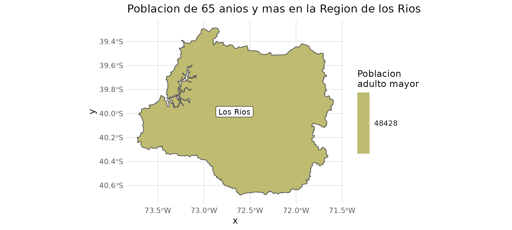

vignettes/chilemapas.Rmd
chilemapas.RmdVamos a mostrar la Region de los Rios y a agregar los nombres de las comunas junto con la informacion de poblacion adulto mayor.
library(chilemapas)
library(dplyr)
library(ggplot2)
poblacion_adulto_mayor_comunas <- censo_2017_comunas %>%
filter(as.integer(edad) >= 14) %>%
group_by(codigo_comuna) %>%
summarise(pob_adulto_mayor = sum(poblacion))
comunas_los_rios <- mapa_comunas %>%
filter(codigo_region == 14) %>%
left_join(
codigos_territoriales %>%
select(matches("comuna"))
) %>%
left_join(poblacion_adulto_mayor_comunas)
# estos colores vienen del paquete colRoz
# https://github.com/jacintak/colRoz
paleta <- c("#DCA761", "#CFB567", "#BFBC71", "#9EA887", "#819897")
ggplot(comunas_los_rios) +
geom_sf(aes(fill = pob_adulto_mayor, geometry = geometry)) +
geom_sf_label(aes(label = nombre_comuna, geometry = geometry)) +
scale_fill_gradientn(colours = rev(paleta), name = "Poblacion\nadulto mayor") +
labs(title = "Poblacion de 65 anios y mas en la Region de los Rios") +
theme_minimal(base_size = 13)
poblacion_adulto_mayor_provincias <- censo_2017_comunas %>%
filter(as.integer(edad) >= 14) %>%
left_join(codigos_territoriales) %>%
group_by(codigo_provincia) %>%
summarise(pob_adulto_mayor = sum(poblacion))
#> Joining, by = "codigo_comuna"
provincias_los_rios <- mapa_comunas %>%
filter(codigo_region == 14) %>%
generar_provincias() %>%
left_join(
codigos_territoriales %>%
select(matches("provincia")) %>%
distinct()
) %>%
left_join(poblacion_adulto_mayor_provincias)
#> old-style crs object detected; please recreate object with a recent sf::st_crs()
#> Joining, by = "codigo_provincia"
#> Joining, by = "codigo_provincia"
ggplot(provincias_los_rios) +
geom_sf(aes(fill = pob_adulto_mayor, geometry = geometry)) +
geom_sf_label(aes(label = nombre_provincia, geometry = geometry)) +
scale_fill_gradientn(colours = rev(paleta), name = "Poblacion\nadulto mayor") +
labs(title = "Poblacion de 65 anios y mas en la Region de los Rios") +
theme_minimal(base_size = 13)
poblacion_adulto_mayor_regiones <- censo_2017_comunas %>%
filter(as.integer(edad) >= 14) %>%
left_join(codigos_territoriales) %>%
group_by(codigo_region) %>%
summarise(pob_adulto_mayor = sum(poblacion))
#> Joining, by = "codigo_comuna"
region_los_rios <- mapa_comunas %>%
filter(codigo_region == 14) %>%
generar_regiones() %>%
left_join(
codigos_territoriales %>%
select(matches("region")) %>%
distinct()
) %>%
left_join(poblacion_adulto_mayor_regiones)
#> old-style crs object detected; please recreate object with a recent sf::st_crs()
#> Joining, by = "codigo_region"
#> Joining, by = "codigo_region"
ggplot(region_los_rios) +
geom_sf(aes(fill = pob_adulto_mayor, geometry = geometry)) +
geom_sf_label(aes(label = nombre_region, geometry = geometry)) +
scale_fill_gradientn(colours = rev(paleta), name = "Poblacion\nadulto mayor") +
labs(title = "Poblacion de 65 anios y mas en la Region de los Rios") +
theme_minimal(base_size = 13)
Se provee un dataset de todas las zonas urbanas (agregación de manzanas) contempladas en el CENSO.
zonas_valdivia <- mapa_zonas %>%
filter(codigo_comuna == "14101") %>%
inner_join(
censo_2017_zonas %>%
filter(
substr(geocodigo, 1, 2) == 14,
as.integer(edad) >= 4
)
)
#> old-style crs object detected; please recreate object with a recent sf::st_crs()
#> Joining, by = "geocodigo"
paleta <- c("#628ca5", "#dca761")
ggplot() +
geom_sf(data = zonas_valdivia, aes(fill = poblacion, geometry = geometry)) +
geom_sf(data = filter(comunas_los_rios, codigo_comuna == "14101"),
aes(geometry = geometry), colour = "#2A2B75", fill = NA) +
ylim(-39.9, -39.78) +
xlim(-73.4, -73.17) +
scale_fill_gradientn(colors = paleta, name = "Población") +
labs(title = "Poblacion de 65 anios y mas en la Comuna de Valdivia") +
theme_minimal(base_size = 13)